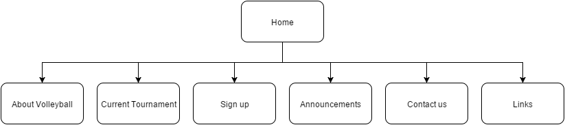

Name: Kevin Wijaya
Login: jc308716
The goal is to improve the business by getting more people to play volleyball at Digger's, especially high school kids and yound adults most of the players is already composed with people who are 35-50 years old.
This is done by promoting the features of Digger's, which are "fun, social volleyball and competitive volleyball tournaments, socialising, licensed bar (happy hour every day from 6-7pm), available to hire for functions – fun and fitness." as quoted by the client.
Assuming that there is a player registration form, there should be a survey on where did the player gets information about Digger's. The website should be in the choices, and the success of the website could be measured from the number of players coming because of the website. Moreover, as an option, there should be a space where players can review the website, to know what it lacks.
Mainly high school students and young adults. This is done by using comic font (in certain pages) and bright colours.

https://github.com/rakwraithraiser/CP1406Assignment1/tree/master/Assn1